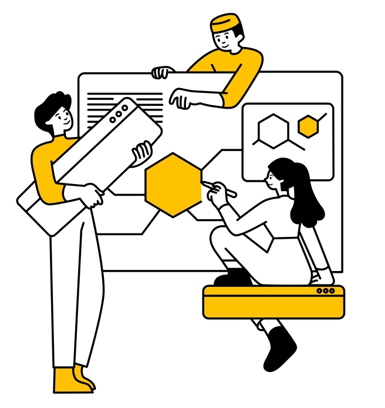

Sobre o Projeto

Mapa da Violência é uma ferramenta desenvolvida para ajudar a combater a violência em nossa sociedade, especialmente contra mulheres. Através deste site, qualquer pessoa pode registrar anonimamente casos de violência, ajudando a mapear áreas onde incidentes ocorrem com mais frequência. Nosso objetivo é construir uma base sólida para a conscientização, prevenção e erradicação da violência de gênero.